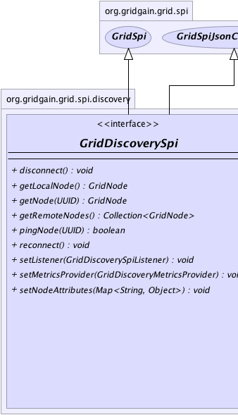
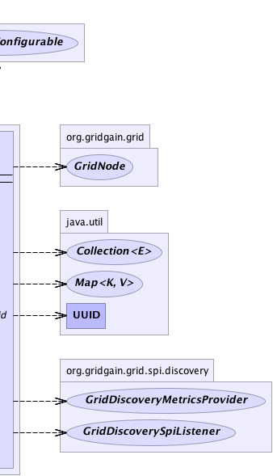

|
|

|

|
|

|

|

|
GridGain™ 3.6.0c
Community Edition |
|||||||||
| PREV CLASS NEXT CLASS | FRAMES NO FRAMES | |||||||||
| SUMMARY: NESTED | FIELD | CONSTR | METHOD | DETAIL: FIELD | CONSTR | METHOD | |||||||||
public interface GridDiscoverySpi
Grid discovery SPI allows to discover remote nodes in grid.
The default discovery SPI is GridMulticastDiscoverySpi
with default configuration which allows all nodes in local network
(with enabled multicast) to discover each other.
Gridgain provides the following GridDeploymentSpi implementations:
Grid.configuration() method to check its configuration properties or call other non-SPI
methods. Note again that calling methods from this interface on the obtained instance can lead
to undefined behavior and explicitly not supported.
| Wiki | |
| Forum |
|  |  |
| Method Summary | |
|---|---|
void |
disconnect()
Tells discovery SPI to disconnect from topology. |
GridNode |
getLocalNode()
Gets local node. |
GridNode |
getNode(UUID nodeId)
Gets node by ID. |
Collection<GridNode> |
getRemoteNodes()
Gets collection of remote nodes in grid or empty collection if no remote nodes found. |
boolean |
pingNode(UUID nodeId)
Pings the remote node to see if it's alive. |
void |
reconnect()
Tells discovery SPI to reconnect to topology. |
void |
setListener(GridDiscoverySpiListener lsnr)
Sets a listener for discovery events. |
void |
setMetricsProvider(GridDiscoveryMetricsProvider metricsProvider)
Sets discovery metrics provider. |
void |
setNodeAttributes(Map<String,Object> attrs)
Sets node attributes which will be distributed in grid during join process. |
| Methods inherited from interface org.gridgain.grid.spi.GridSpi |
|---|
getName, getNodeAttributes, onContextDestroyed, onContextInitialized, spiStart, spiStop |
| Methods inherited from interface org.gridgain.grid.spi.GridSpiJsonConfigurable |
|---|
setJson |
| Method Detail |
|---|
Collection<GridNode> getRemoteNodes()
GridNode getLocalNode()
@Nullable GridNode getNode(UUID nodeId)
nodeId - Node ID.
null if node is not found.boolean pingNode(UUID nodeId)
nodeId - Node Id.
true if node alive, false otherwise.void setNodeAttributes(Map<String,Object> attrs)
attrs - Map of node attributes.
void setListener(@Nullable
GridDiscoverySpiListener lsnr)
GridDiscoveryEvent for a set of all possible
discovery events.
Note that as of GridGain 3.0.2 this method is called before
method GridSpi.spiStart(String) is called. This is done to
avoid potential window when SPI is started but the listener is
not registered yet.
lsnr - Listener to discovery events or null to unset the listener.void setMetricsProvider(GridDiscoveryMetricsProvider metricsProvider)
GridDiscoveryMetricsProvider.getMetrics() method to exchange
dynamic metrics between nodes.
metricsProvider - Provider of metrics data.
void disconnect()
throws GridSpiException
GridSpi.spiStop() with accounting that it is not a full stop,
but disconnect before reconnect (i.e. some internal threads and
resources may be preserved on disconnect and reused on reconnect again).
GridSpiException - If any error occurs.GridDiscoverySpi.reconnect()
void reconnect()
throws GridSpiException
GridSpi.spiStart(String) with accounting that it is not a full start,
but reconnect (i.e. some internal threads and resources may be preserved
on disconnect and reused on reconnect again).
Prior to calling this method manager will ensure, that it is in the correct network segment.
GridSpiException - If any error occurs.GridDiscoverySpi.disconnect()
|
GridGain™ 3.6.0c
Community Edition |
|||||||||
| PREV CLASS NEXT CLASS | FRAMES NO FRAMES | |||||||||
| SUMMARY: NESTED | FIELD | CONSTR | METHOD | DETAIL: FIELD | CONSTR | METHOD | |||||||||
|
GridGain - Real Time Big Data
|
|
|
|